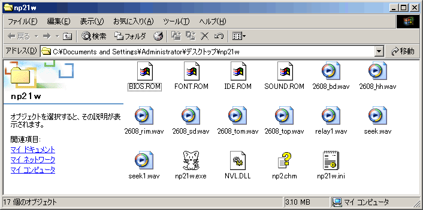

ねこープロジェクトII単体でもそれなりの動作をしますが、実機BIOS等のファイルを用意すると より実機に近づきます。
また、追加ファイルを用意することで機能追加などを行うことも出来ます。
全てnp21w.exeと同じフォルダに置いて下さい。
ただし、PC-9821のエミュレーションでは必ずしも実機BIOSを用いる方が優れているとは限りません。

実機のBIOS ROM(E8000hから96KB)をファイル化した物です。
専用のツールでファイル化して下さい。
ダウンロード: getbios.lzh (PC-98シリーズ MS-DOS用)
実機のIDE ROM(D8000hから8KB)をファイル化した物です。
ファイルの別名が多数ありサイズもまちまちですが、先頭8KBしか使いませんのでどのファイルでも結果は同じです。
GETBIOS.COMのbios9821.romを作成できるバージョンを入手するか、GetITF98等のツール（BANK3.BINが出来ます）でファイル化して下さい。
4GBまでのHDDが使用可能な機種のBIOSであれば使用できると思われますが、機種依存が激しいので問題を起こさないか十分に検証を行って下さい。実機IDE BIOSが必須になるケースはほぼありませんので、使用しないことも良い選択かもしれません。
実機のフォント ROMをファイル化した物です。
専用のツールでファイル化して下さい。
ダウンロード: getbios.lzh (PC-98シリーズ MS-DOS用)
font.romの他に BMP形式のフォントファイルも使用できます。
サウンドボードに搭載されるBIOS ROMをファイル化した物です。
専用のツールでファイル化して下さい。
ダウンロード: getbios.lzh (PC-98シリーズ MS-DOS用)
OPNAに搭載されているリズム音源を wave形式で録音したファイルです。
ねこープロジェクトIIで使用するには 44KHz 16bit モノラル 無圧縮形式である必要があります。
OPNAに搭載されているリズムは以下の通りです。
| ファイル名 | 対応する音色 |
|---|---|
| 2608_bd.wav | バスドラム |
| 2608_sd.wav | スネアドラム |
| 2608_top.wav | シンバル |
| 2608_hh.wav | ハイハット |
| 2608_tom.wav | タム |
| 2608_rim.wav | リムショット |
Neko Project 21/W(np21w, ねこープロジェクト21/W)用のVirtualPC等イメージ使用ライブラリです。
このファイルを用意すると動的容量のVHDハードディスクイメージやその他のエミュレータで有名なディスクイメージ形式が使用できるようになります。
ヘッド移動時に鳴らす音です。
44KHz 16bit モノラル 無圧縮形式で録音してファイル化して下さい。
1クラスタ移動時に鳴らす音です。
44KHz 16bit モノラル 無圧縮形式で録音してファイル化して下さい。
ウィンドウアクセラレータのリレー切替時に鳴らす音です。
44KHz 16bit モノラル 無圧縮形式で録音してファイル化して下さい。